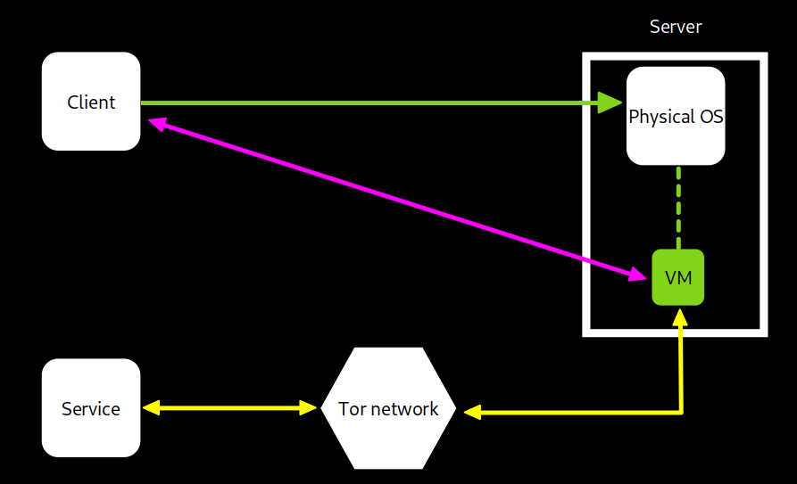
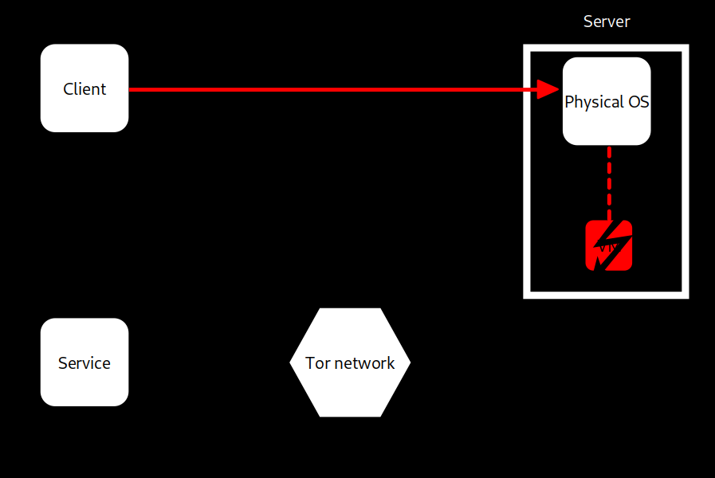

>_ Presentation
The Anweddol project can be defined as a server system running temporary virtual machines that can be remotely controlled by a client, and destroyed once used. It’s usefulness comes when someone wants to use a fully functional computer while being exposed to less dangers, like surveillance, tracking, potentially malicious surfing/software usage, or simply for having another machine at disposal for miscellaneous operations.
>_ How it works
In a global scale, the interactions scheme between the client and the server is quite simple : As you can see on the first scheme below, the client will first initiate a session with the server. The server will create a new temporary virtual machine that the client will be able to control. It can now access to the service through it, and all the server's output requests are sent through the tor network to also preserve the server’s anonymity in the process.
Once that the Client is done with, it will send a signal to the server asking him to destruct the temporary virtual machine, and close the session (scheme below).
>_ Suggestions / Questions / Ideas
If you have any ideas, comments or even questions about the project, you can express them on the dedicated issues page on the github repository.